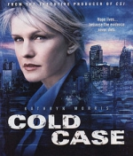

BurningSeries - Simpsons und weitere Serien kostenlos online sehen
Cold Case ? Kein Opfer ist je vergessen
Staffel 4

Danke an
Sirol
Staffeln:
1
2
3
4
5
6
7
Zufall
#
Name
Videos
1
Vor laufender Kamera
Rampage
PutLocker
2
Veteranen
The War at Home
PutLocker
3
Erdschweine
Sandhogs
PutLocker
4
Baby-Blues
Baby Blues
PutLocker
5
Plan B
Saving Sammy
PutLocker
6
Rock 'n' Roll
Static
PutLocker
7
Der Schlüssel
The Key
8
Glühwürmchen
Fireflies
PutLocker
9
Einsame Herzen
Lonely Hearts
PutLocker
10
Einmal Cop, immer Cop
Forever Blue
PutLocker
11
Die Sugar Boys
The Red and the Blue
PutLocker
12
Fight Club
Knuckle Up
PutLocker
13
Blackout
Blackout
PutLocker
14
8:03 Uhr
8:03 AM
PutLocker
15
Bomben für den Frieden
Blood on the Tracks
PutLocker
16
Barbara
The Good-Bye Room
PutLocker
17
Vater und Sohn
Shuffle, Ball Change
PutLocker
18
Der Ein-Dollar-Traum
A Dollar, A Dream
PutLocker
19
Recht und Gerechtigkeit
Offender
PutLocker
20
Cheerleader
Stand Up and Holler
PutLocker
21
Suffragetten
Torn
PutLocker
22
Menschliche Fracht
Cargo
PutLocker
23
Ein schöner Tod
The Good Death
PutLocker
24
Stalker
Stalker